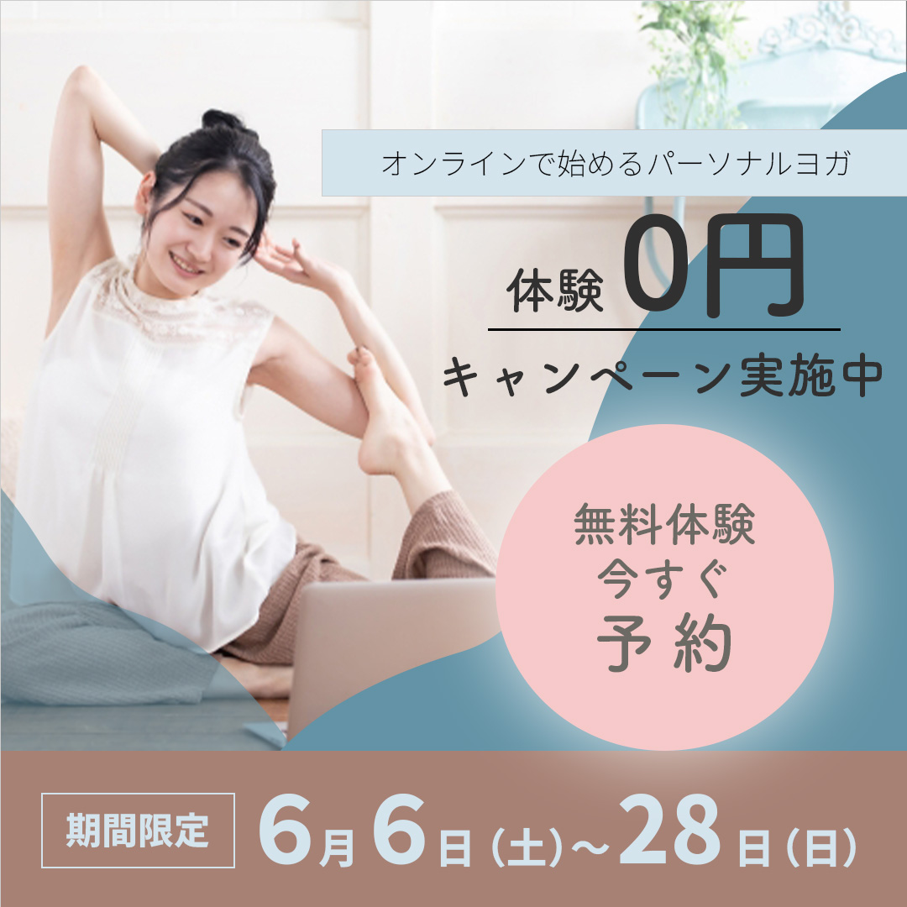
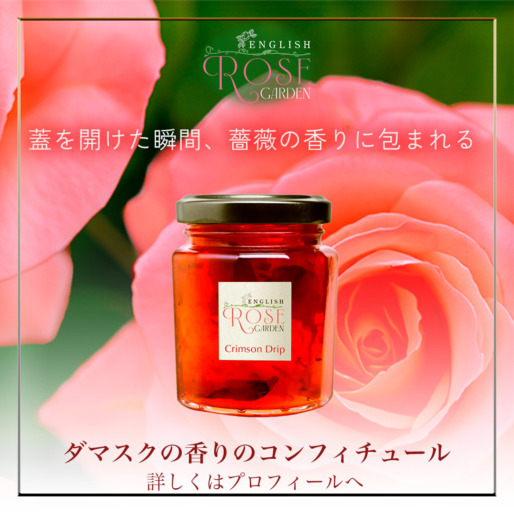
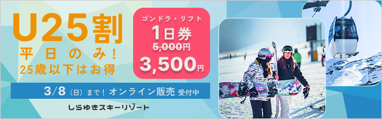
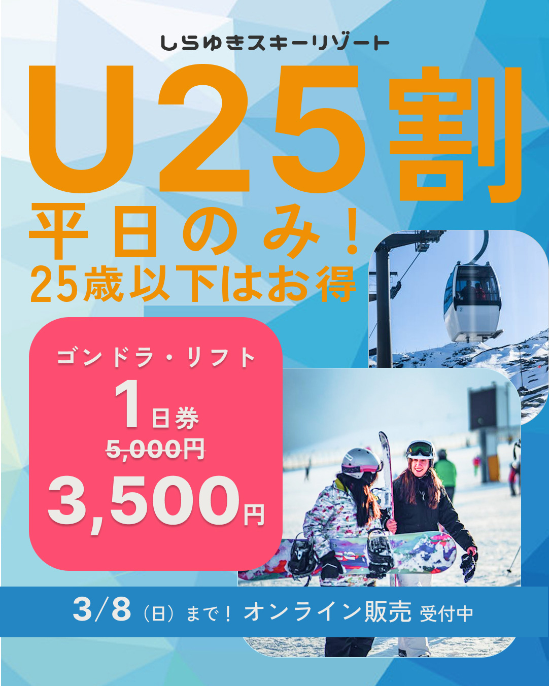

バナーデザイン・SNS画像事例
（自主制作）

そっと始められるヨガ体験
概要
オンラインで受講できるパーソナルヨガの無料体験への誘導を目的としたバナーを制作。
想定したお客様
無理なく健康習慣を始めたいと考えている、落ち着いた雰囲気を好む20〜30代女性。
目指したこと
不安なくやってみようと思え、安心して無料体験に進める状態をつくる。
デザインの意図
くすみ系のやわらかな色合いと余白を活かし、忙しい日常の中でもほっとできる安心感のある雰囲気を意識した。主張しすぎないフォントを使用し、落ち着いた印象の中で自然と情報が伝わるトーンに整えている。
振り返り
安心感のある雰囲気は表現できた一方で、全体としては定番的。
差別化につながる視点や切り口の必要性を感じた。

手に取ってみたくなる特別感
概要
イングリッシュガーデンで育てた薔薇のコンフィチュールの魅力を伝え、オンライン販売サイトへの興味喚起を目的としたSNS投稿用バナー。
想定したお客様
品質の良さや希少性を重視し、自分だけの逸品を見つけたいと考える層。
目指したこと
商品の背景や詳細を知りたくなり、オンラインショップを自然と訪れたくなる状態。
デザインの意図
商品の特徴が直感的に伝わるよう写真を主役に構成。華やかさの中に自然由来の落ち着きを持たせた。文字情報は必要な要素に絞って整理。フォントに変化をつけ、情報の役割が視覚的に伝わるよう整えた。
振り返り
視認性を確保するための画像下部の加工と、文字情報の配置は視線の流れをより自然に作る余地あり。


行くなら今！を後押し
概要
25歳以下を対象とした平日割引キャンペーン告知のInstagram投稿用バナー。W350×H100のサイズ展開も制作。
想定したお客様
比較的自由に時間を使え、気軽に行けるレジャー情報に関心のある若年層。
目指したこと
平日限定の割引に魅力を感じてもらい、ゲレンデの場所やオンラインチケットの詳細を確認したくなる導線を意識。
デザインの意図
冬のレジャーの高揚感とエネルギーが伝わるようカラーリングを設計。カラーとタイポグラフィを主軸に構成し、必要な情報がひと目で伝わるよう整理。ゴシック体の太字で重要な情報を強調し、視線の流れにも配慮した。
振り返り
写真から伝わる魅力を押し出した表現で、伝わる速度がより早くなるバージョンも考えたい。